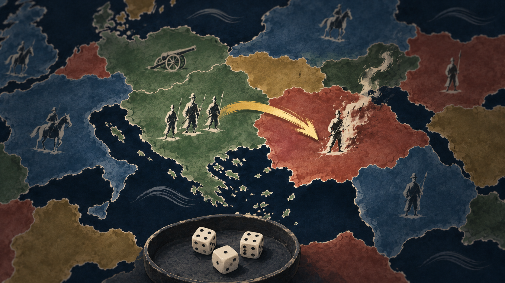
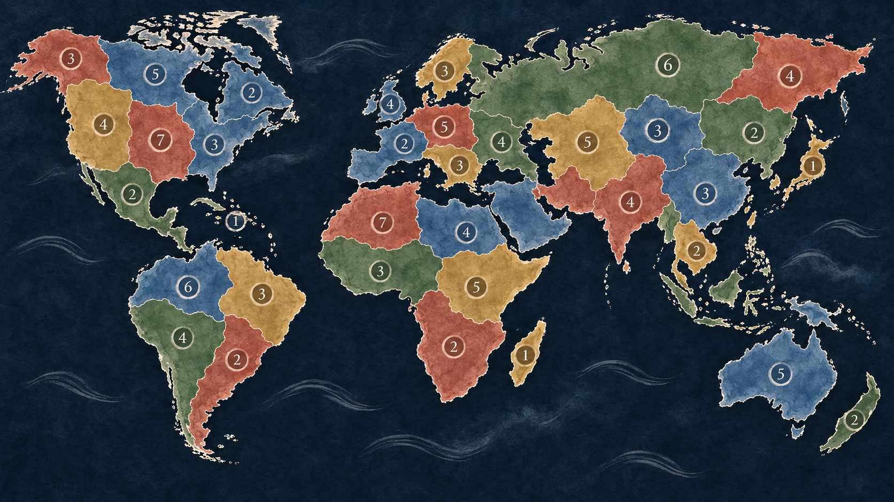
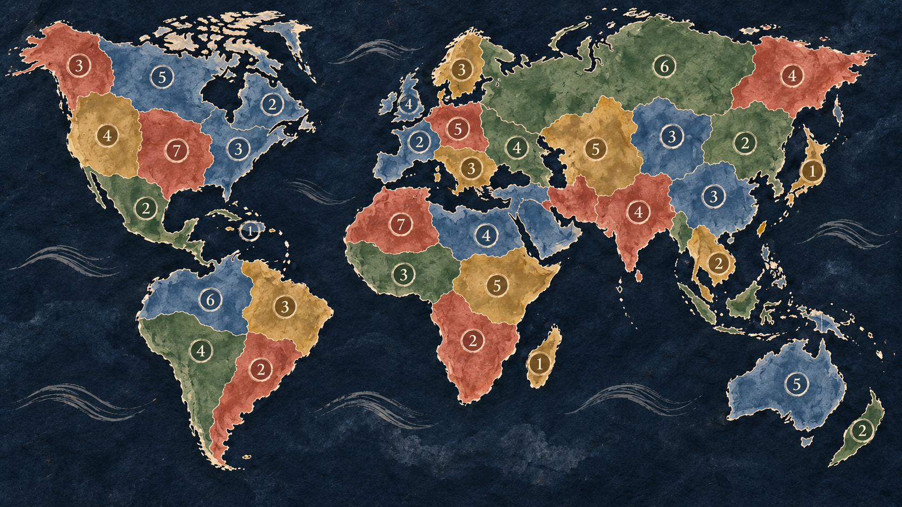
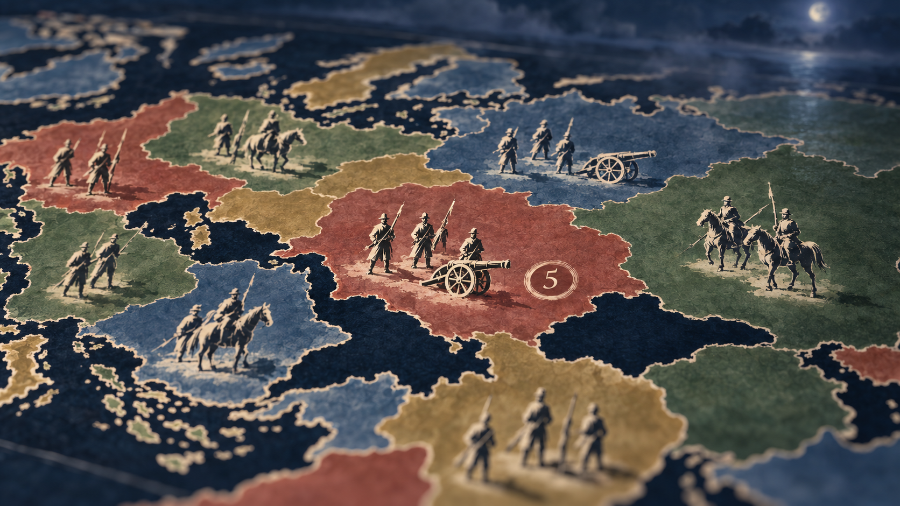
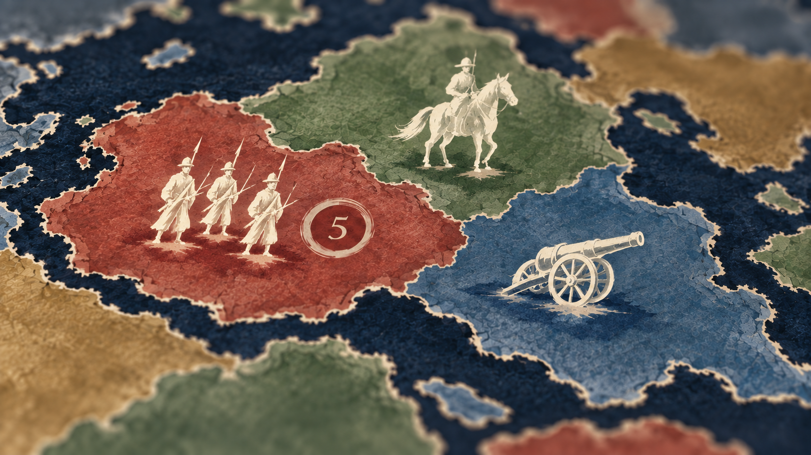
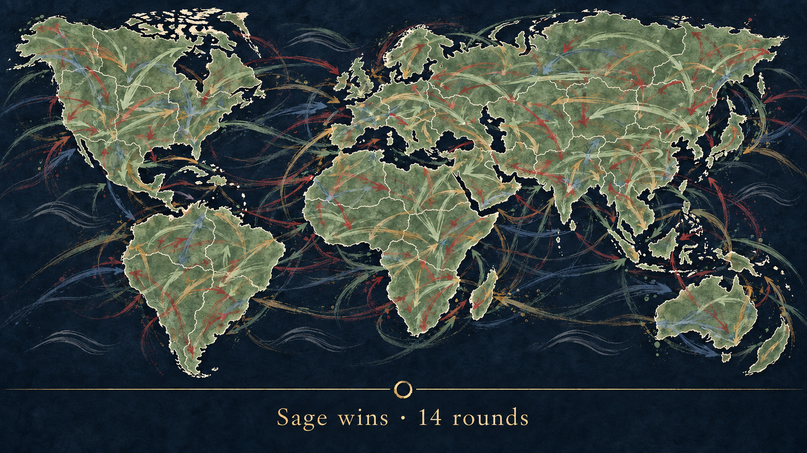

Pick the ones whose direction you want in the build. Right column is the corrected version where there is one.
Both tries stayed close to the current board. Image generation anchors on the reference; it won't leap to "authored" on its own.


First try made dark metal miniatures (the old silhouette misread). v3 fixed that: ivory brush figures on the pigment.


v2 swaps the arrow for a gold brush stroke and the wooden bowl for an ink-ring tray.

Every attack of the game layered as faded strokes; the one line of text is the result.

No rounded rectangles: gold rule, serif words, a brush underline on the active phase, an ink ring for Blitz.